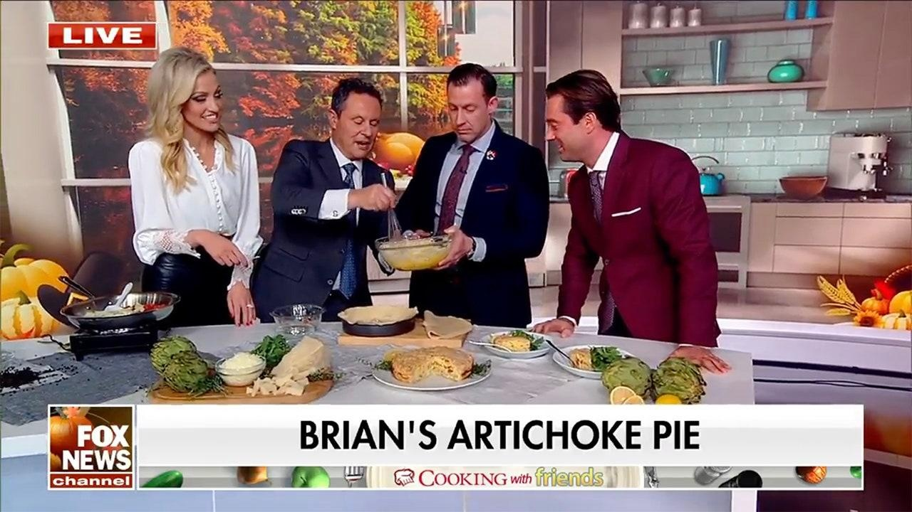

‘Cooking with Friends’: Brian Kilmeade shares his favorite artichoke pie recipe just in time for Black Friday"Fox & Friends" co-host Brian Kilmeade shared one of his favorite recipes, his mom's artichoke pie, with the "Fox & Friends" team on Nov. 24. "Cooking with Friends: Eat, Drink & Be Merry," is a new cookbook made up of 75 different recipes from the Fox News staff, which is now on sale for Black Friday. "I am on the cover, so there's a lot of pressure on me," Kilmeade joked, before sharing his family's recipe with the other Fox talent, including Carley Shimkus and Joey Jones. This savory pie is the perfect dish to start with when hosting friends and family. "[When] you think pie, you think, you think dessert," Kilmeade commented. The appetizer-style dish starts with sautéing pepperoni and artichoke hearts in a pan with pre-heated oil and garlic. "You have to squeeze the water out of [the artichoke hearts], did you notice that?" Kilmeade noted. The recipe comes together in a pinch, once you combine the pepperoni and artichoke heart mixture with hand-beaten eggs and an assortment of cheeses, said Kilmeade. Once the filling comes together, pour the cheesy blend into the prepared pie dough — which can be purchased at a local grocery store. Kilmeade remembers making this recipe several years ago with his daughters — but he said that those making this recipe today are likely to have a better result. "According to reports, when I made this [recipe] with my daughters in 2015, it caught on fire," he recalled. Bake the pie at 350 degrees until the crust is golden brown to get the perfect finish on your pie. Shimkus finished the segment with some exciting news — just in time for Black Friday shoppers. "Cooking with Friends" is now available for 40% off on Amazon as part of a Black Friday special. For a chance to win a copy of the cookbook, follow Shimkus on Instagram, like her most recent post, and post a "friendsgiving" photo or video while using the #FoxandFriendsgiving tag for a chance to win. Today — Friday, Nov. 24, is the final day to enter the "friendsgiving" sweepstakes. For more information about the new cookbook, "Cooking with Friends," and how to order it, check out the Fox News Books website. For more Lifestyle articles, visit www.foxnews.com/lifestyle. |
 |